A platform where people can freely design their own NFT profile picture and buy and sell NFTs — avatar, app and WeChat H5 side.
This was my first project after finishing my internship, working alongside a product manager on an outsourced assignment: a relatively new NFT custom-trading platform based in China, targeting young users who wanted the freedom to personalise and trade their own NFTs.
Back in 2022, NFTs in China were still in their early days — nowhere near as developed as in the West. While Western NFTs were often tied to investment and finance, the scene in China was more about fashion, culture and creative expression, and the space felt like a blank canvas with very few examples to learn from.
So our team took a "light digital culture" approach — tapping into the curiosity of young users who love exploring trends. Instead of pushing the profit angle, we focused on customisation, style and self-expression, making NFTs feel more like digital fashion or collectibles, and brought the experience into spaces young people already used daily, like WeChat mini programs.
The team was small — just four of us: a product manager, a developer, someone handling marketing, and myself. Over a one-month sprint I took on multiple roles, covering product design, visual design, promotional assets and illustration work.
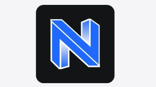
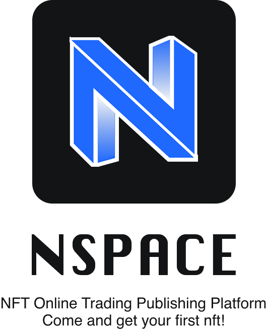
The logo I designed adopts a simple, modern geometric structure with the letter "N" at its core, drawing on the artistic form of the game Monument Valley to represent infiniteness and playfulness. It originally shipped with a switch animation, since lost with the damaged AE file.
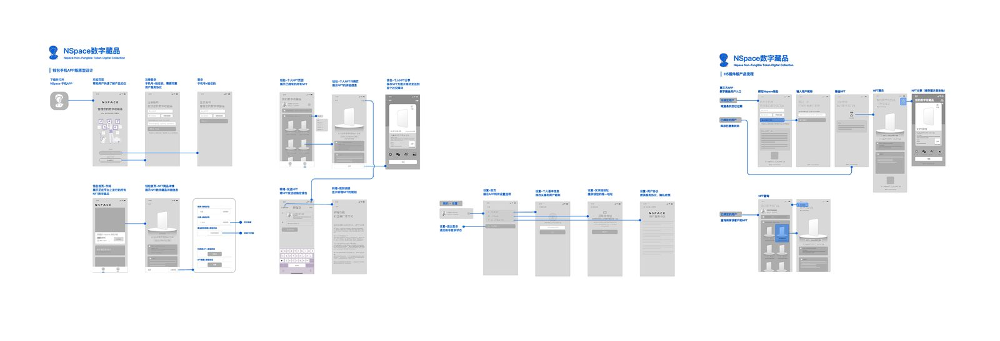
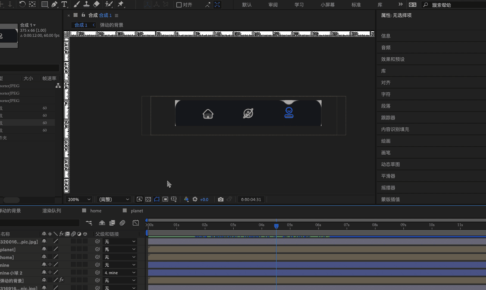
For the wireframes we built two platforms: the app focused on advanced features for experienced players — detailed stats, customisation, community forums for strategy — while the WeChat mini program prioritised quick access for NFT beginners, highlighting collection and fast trading. Both share a clean header, a dynamic home screen with featured content, and easy access to profile and settings.
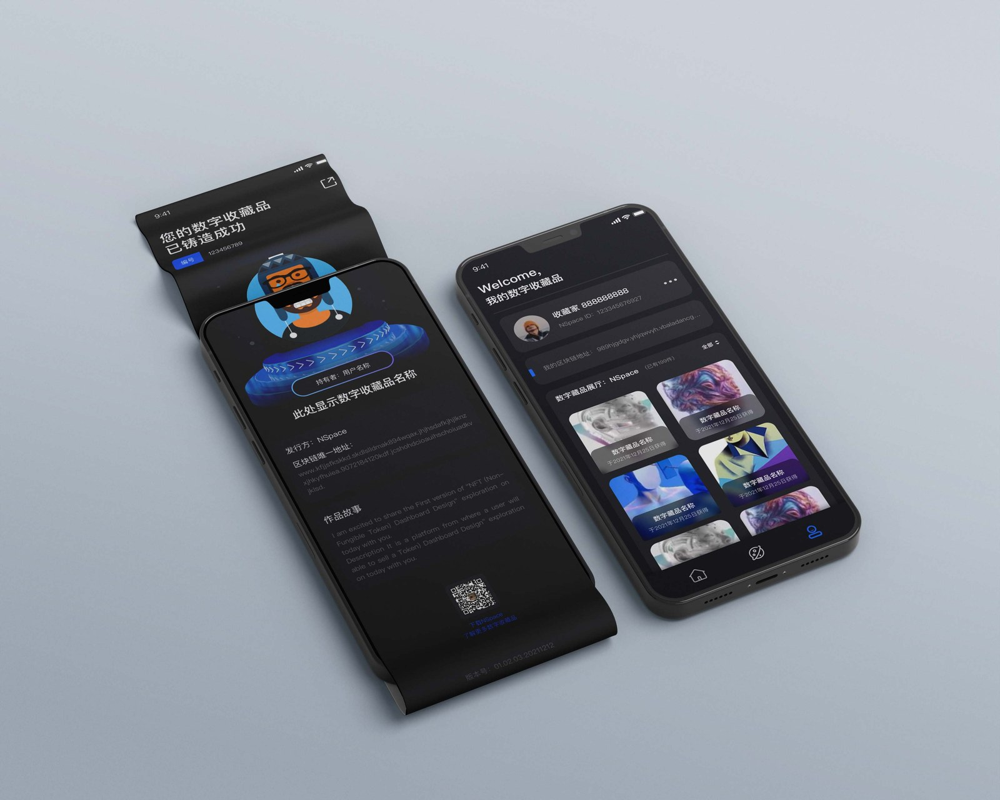
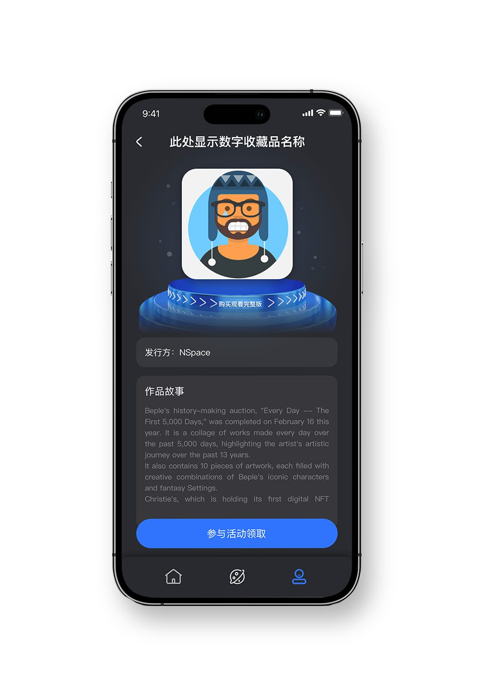
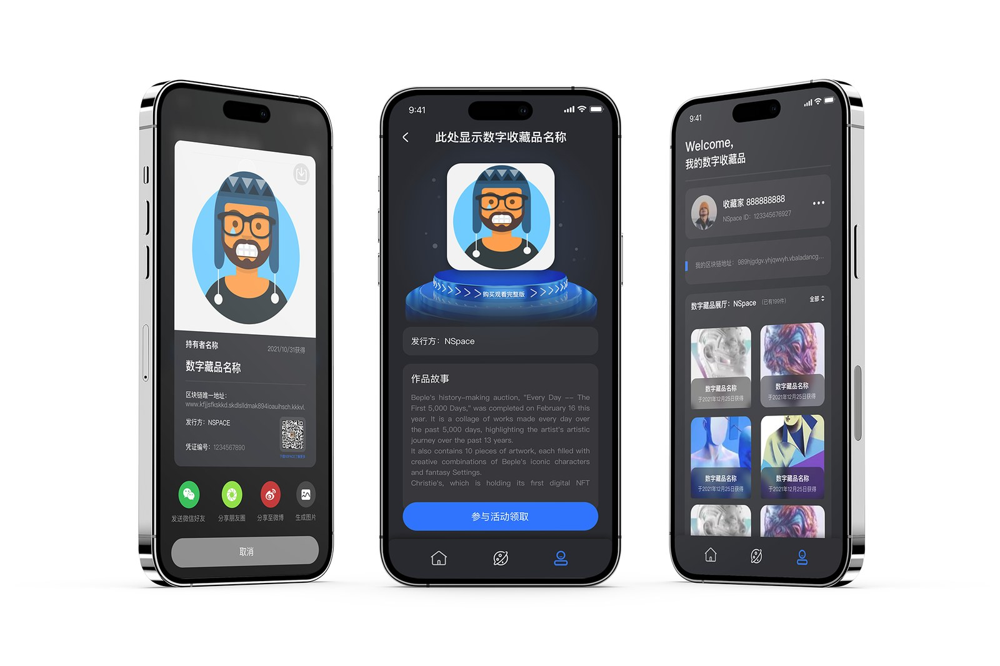
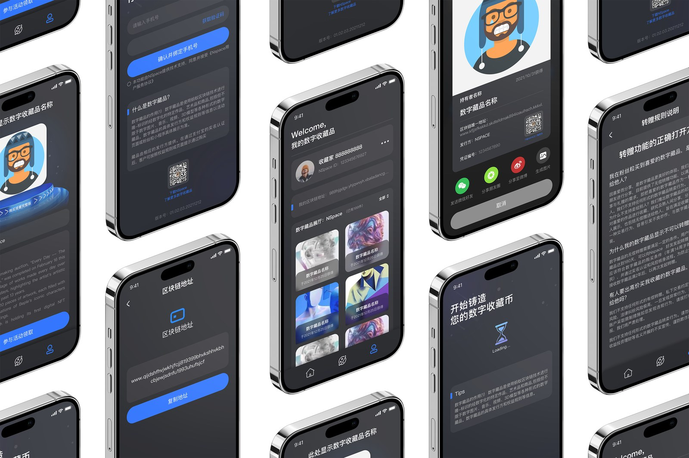
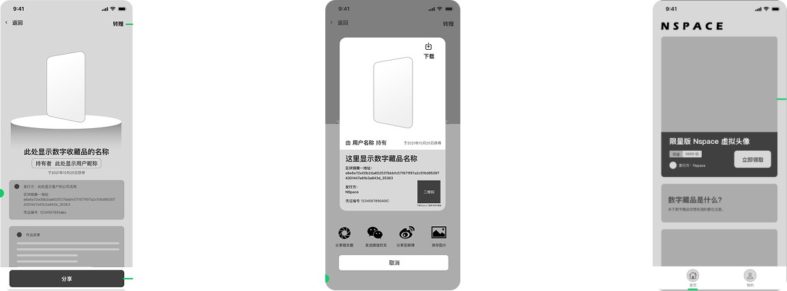
#18191E · #1F69FE · #979797 — a modern, tech-forward palette chosen for a young Chinese audience in the NFT space. Deep grey and black lend mystery and sophistication; the bright blue adds energy and a digital feel; light grey keeps things sleek; white adds freshness and clarity.
For the character design, I drew inspiration from some of the most popular street style and pop-culture trends in China at the time. Elements like blonde hair, dreadlocks, ear piercings, and visual references to iconic films like Avatar were incorporated to resonate with young users — aiming for a look that felt bold, expressive and instantly relatable, something that made the NFTs feel personal and culturally relevant.
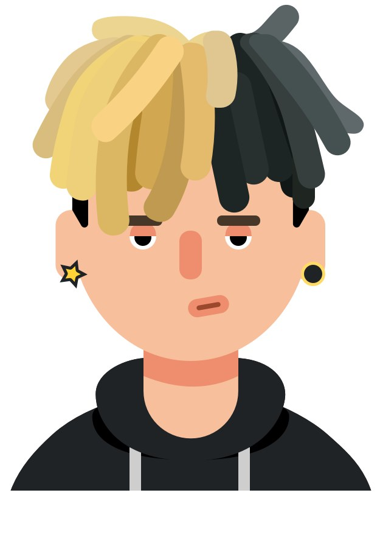
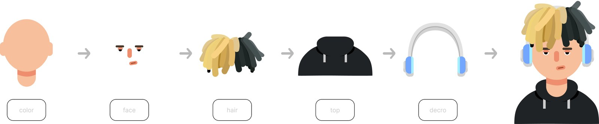
In December 2022, China's NFT development was still at an early stage — the market remained in a regulatory grey area, with relatively low financial attributes but a strong focus on collectible and trendy cultural elements.
This visual system followed a "decentralised, light digital culture" strategy. It intentionally reduced the financial visual cues commonly associated with NFTs, aligned with the aesthetics and usage scenarios favoured by young users — social media, avatars, the metaverse — and retained a solid foundation for IP scalability and customisation.
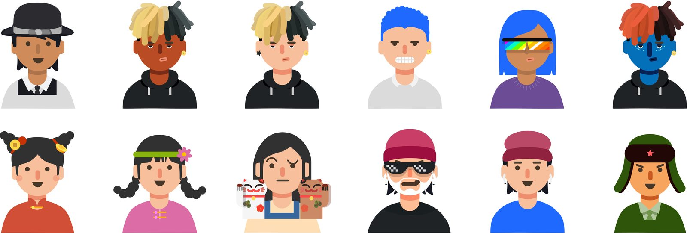
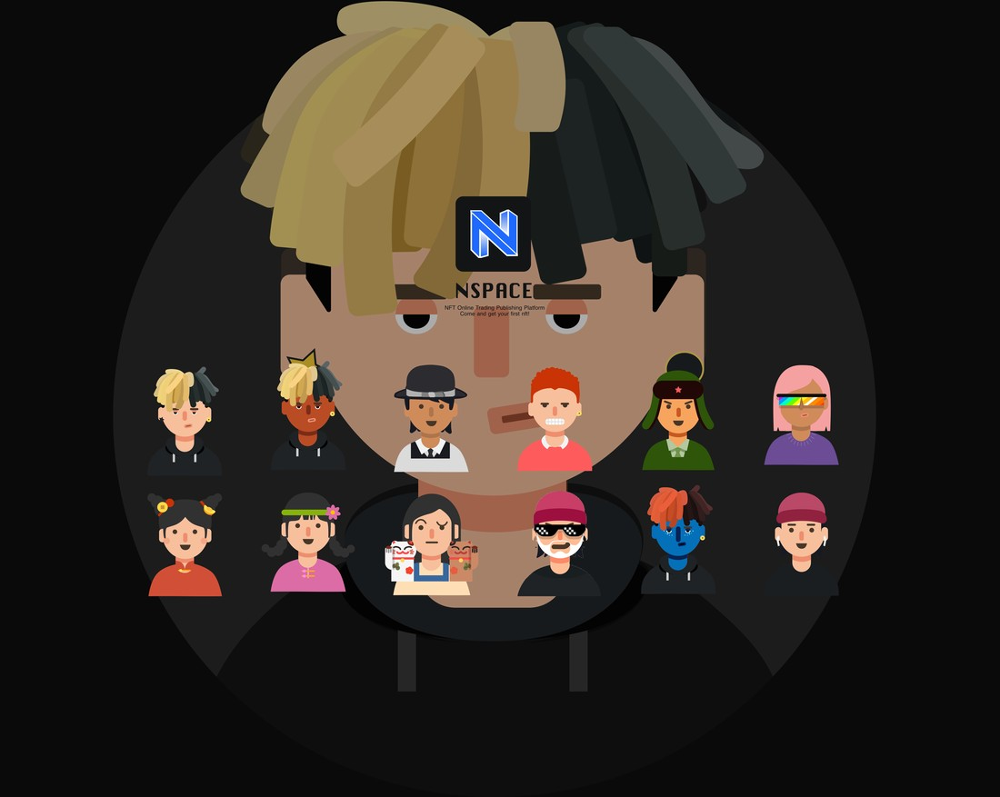
The entire design process — market learning → design strategy → wireframing → prototyping → high-fidelity design → docking with programmers → presenting to product managers → integration and iteration. This project taught me, start to finish, how a product actually gets designed.
Adapting to a startup team — closely collaborating with a product manager, marketer and engineer sharpened my ability to rapidly adapt and work with diverse team members to design and launch a new product.
Communication and problem solving — frequent friction with the programmer and other functions taught me how to communicate across disciplines and resolve problems effectively.